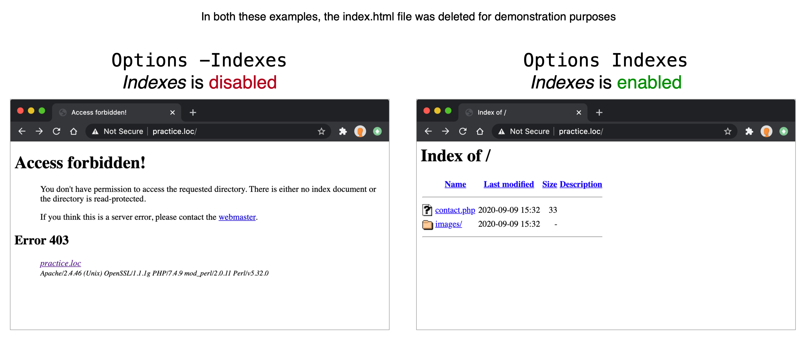

Apache configs
When setting up our local and production servers, we dabble a bit in Apache configuration files. In this supplemental note set, we’ll dig deeper into these configurations to learn more about what they’re doing.
Where configs are set
Apache configurations can be made on a global (i.e. server-wide) level via the main
configuration file, httpd.conf.
On our local XAMPP/Apache servers we can find this file at the following locations:
-
Mac:
/Applications/XAMPP/xamppfiles/etc/httpd.conf -
Windows:
c:\xampp\apache\conf\httpd.conf
This global config file can include other configuration files.
We saw an example of this when setting up local domains
because we edited thehttpd.conf file to include the VirtualHosts config file:
# Virtual hosts
Include etc/extra/httpd-vhosts.conf
Additionally, directory-specific configurations can be made via a file called
.htaccess that is located within a given directory.
In summary, here are three ways we can set Apache configs:
- Globally via
httpd.conf - Via included config files
- Locally via a
.htaccessfile in a directory
Directives - How configs are defined
In an Apache config file, directives are used to change/configure settings.
Here are a list of available directives...
As an example, if we look at our local server’s httpd.conf file (paths given above),
we see
the DocumentRoot
directive used to set the document root to some path. Example:
DocumentRoot "/Applications/XAMPP/xamppfiles/htdocs"
Grouped directives
When a directive needs to group together a series of related directives, they’ll be written using a tag style. For example, in the following config, the IfModule directive is used to apply 2 directives if the ssl_module module is available:
<IfModule ssl_module>
SSLRandomSeed startup builtin
SSLRandomSeed connect builtin
</IfModule>
We don’t have to worry right now about what ssl_module, SSLRandomSeed, etc. is - just
note the pattern of how these directives are grouped together between a <IfModule>
start tag/directive and a </IfModule> closing tag/directive.
Now that we understand where and how directives are set to configure Apache, let’s dig into Virtual Hosting, which is the primary area in which we work with Apache configs in this course...
Virtual Hosting
Apache can serve many different sites simultaneously via a process called Virtual Hosting.
Recall that when we set up our local domains, we instruct Apache via it’s main config file to load a
VirtualHosts config file from etc/extra/httpd-vhosts.conf (ref).
Within this file (etc/extra/httpd-vhosts.conf), we set up <VirtualHost> directives such as the
following:
<VirtualHost *:80>
ServerName practice.loc
DocumentRoot /path/to/htdocs/e28/practice
<Directory /path/to/htdocs/e28/practice>
AllowOverride All
Options -Indexes
Require all granted
</Directory>
</VirtualHost>
Let’s break down each directive used in this block...
<VirtualHost> directive
<VirtualHost *:80>
[...]
<VirtualHost>
From the docs, we can see that the <VirtualHost> directive has the following signature:
<VirtualHost addr[:port] [addr[:port]] ...> ... </VirtualHost>
From this, we learn that each VirtualHost must specify one or more addresses (and optionally port number) that the VirtualHost should apply to.
When we write this as <VirtualHost *:80>, we’re saying it should apply to any
address
(*) on port 80.
ServerName directive
ServerName practice.loc
The ServerName
directive is used to set the hostname for the given VirtualHost. In this example, that’s
practice.loc.
In other words, when traffic enters the server via the hostname practice.loc, the
given
VirtualHost settings will apply.
DocumentRoot directive
DocumentRoot /path/to/htdocs/e28/practice
The DocumentRoot directive sets the directory from which Apache will serve files for the given VirtualHost.
<Directory> directive
<Directory /path/to/htdocs/e28/practice>
AllowOverride All
Options -Indexes
Require all granted
</Directory>
The <Directory>
directive is used to enclose a group of directives that will apply only to a given directory, which
in our example, is the DocumentRoot directory (/path/to/htdocs/practice>).
Within this grouping, we see the following directives...
AllowOverride directive
AllowOverride All
The AllowOverride
directive is used to specify which directives in a directory-specific Apache config file
(.htaccess) can override earlier configuration directives.
When this directive is set to All (as it is in our example), it’s allowing any
directive to
be overridden.
Options directive
Options -Indexes
The options directive controls which server features are/aren’t available in a particular directory.
Here, we’re disabling the Indexes option, which makes it so that if the given directory is
missing a DirectoryIndex
(e.g. index.html) we won’t see a listing of contents of that directory.
The following screenshot shows the effect of having Indexes enabled vs. disabled
(assuming
there’s no index file):

Typically, it’s important that Indexes are disabled on a production server so you don’t inadvertently expose directory contents to a visitor. To be consistent, we apply this setting on both local and production.
Require directive
Require all granted
The Require directive is used to allow/deny access to the site. When set to all granted, access is allowed unconditionally.
Using Require, it’s possible to restrict access via various methods (e.g. IP address, http method, etc.) and this is sometimes used for security purposes.
Summary
# Define a VirtualHost that will apply to any incoming traffic (*) on port 80
<VirtualHost *:80>
# The host name that will trigger this VirtualHost
ServerName practice.loc
# The directory from which Apache will serve files for this VirtualHost
DocumentRoot /path/to/htdocs/e28/practice
# The nested directives will apply to this directory
<Directory /path/to/htdocs/e28/practice>
# Directory-specific .htaccess files can override all earlier configuration directives
AllowOverride All
# Don't show directory listing if no index file is found
Options -Indexes
# All requests are allowed
Require all granted
</Directory>
</VirtualHost>